Использование в вёрстке ::after и ::before
Обычно для демонстрации возможностей псевдоэлементов, ::after и ::before используются для вывода текста после и до содержимого элемента. Чаще всего на практике эти псевдоэлементы оставляют пустыми, а затем к ним добавляют нужную стилизацию.
- ::after и ::before в HTML
- Точки между слов
- Добавление треугольника
- Добавление тени
- Повёрнутые рамки
- Несколько псевдоэлементов
::after и ::before в HTML
Сами псевдоэлементы в HTML можно представить следующим образом.
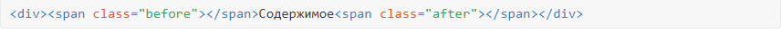
Про псевдоэлементы следует помнить следующее:
- это строчные элементы;
- они не работают без свойства content;
- они являются дочерними элементами.
Для строчных элементов нельзя задать ширину и высоту, поэтому псевдоэлементы следует сделать блочными через display или, что применяется чаще, задать им абсолютное позиционирование. В сочетании с относительным позиционированием у родителя это позволяет нам легко управлять положением блока.
В качестве демонстрации сделаем блок со скошенным краем
Цветной прямоугольник мы добавим через ::before и сделаем его скошенным через свойство transform с функцией skewY().
Далее, используя абсолютное позиционирование, зададим блоку размеры, совпадающие с родителем, и сдвинем блок вверх через свойство top, чтобы спрятать верхний скошенный край. Цветной блок отображается поверх текста, так что его надо опустить ниже с помощью свойства z-index со значением -1.
Финальный код показан в примере
Блок со скошенным краем
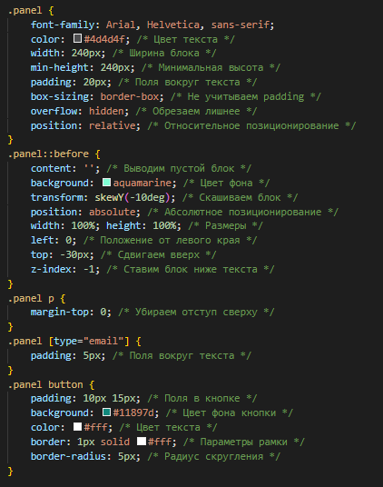 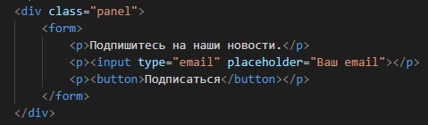
Точки между слов
В оглавлениях, справочниках, рецептах для наглядности и удобства разные части текста на одной строке соединяют пунктирной линией. Взгляд скользит по этой линии и не перескакивает на другую строку.
Отдельные строки мы создаём через список и элементы <li>, внутрь которых вставляются левый и правый фрагменты строки. Чтобы стилизовать правую часть строки, поместим её в элемент <span>.
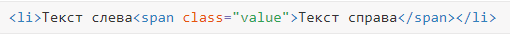
Линия между частями текста создаётся с помощью свойства border-bottom - оно позволяет задать одновременно желаемую толщину, стиль и цвет линии. В итоге мы легко можем сделать линию пунктирной или сплошной, поменяв в стилях одно значение. Сама линия выводится с помощью псевдоэлемента li::before, как показано в примере.
Точки между слов
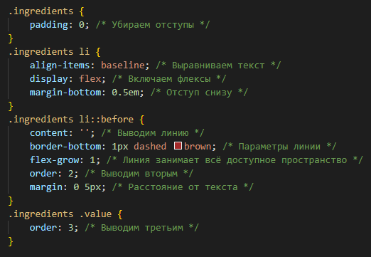 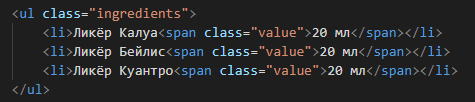
- Ликёр Калуа20 мл
- Ликёр Бейлис20 мл
- Ликёр Куантро20 мл
Добавление треугольника
Треугольники в веб-дизайне часто используются как указатели, стрелки или просто в качестве оформления элементов веб-страниц. Для создания треугольников обычно применяются границы — сперва делается блок нулевого размера, затем к этому блоку добавляется border, размер которого совпадает с размером треугольника. Окончательно делаем границы на неиспользуемых сторонах прозрачными, в итоге остаётся цветной треугольник.
Чтобы на первых было проще делать разные треугольники, можно воспользоваться генераторами. Вот один из них. CSS triangle generator.
Выбираете желаемую форму треугольника, задаёте его размеры и цвет, после чего получаете готовый код CSS.
Добавление треугольника и его позиционирование возлагается на псевдоэлементы. В примере мы делаем блок с фотографией и заголовком, слева от которого вставляется цветной треугольник. При наведении курсора на блок, цвет фона заголовка и цвет треугольника меняются.
Позиционирование треугольника делается традиционно — через свойство position и свойства left и top. Такой подход позволяет разместить треугольник в любом произвольном месте нашего блока.
Треугольник возле заголовка
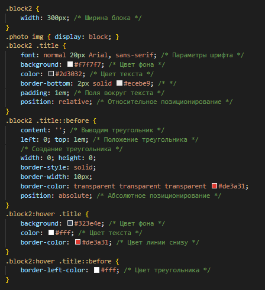 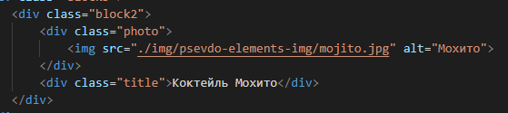
Другой разновидностью треугольника может служить уголок, который имитирует загнутый лист
Опять же, сперва делаем прямоугольный треугольник с помощью border, затем помещаем его в правый верхний угол блока. Чтобы при этом получить эффект загнутого уголка, часть квадрата закрасим белым цветом, совпадающим с цветом фона. Да, выходит, что на разноцветном фоне этот метод работать не будет.
Для большей выразительности уголка добавим к нему тень через box-shadow, а чтобы тень оставалась только на уголке, обрежем её за пределами блока через свойство overflow со значением hidden.
Загнутый уголок
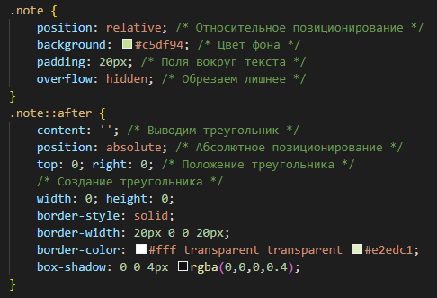 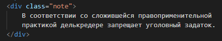
Добавление тени
Тень для блока делается с помощью свойства box-shadow, при этом тень повторяет форму блока. Так, если сделать блок со скруглёнными уголками через border-radius, то тень тоже будет со скруглением.
В некоторых ситуациях box-shadow уже недостаточно, когда мы хотим сделать тень сложной формы, например, имитирующей приподнятые уголки (рис. 1).
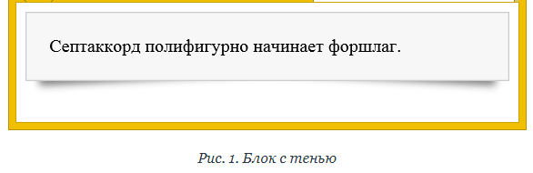
Для создания подобных теней мы добавляем два псевдоэлемента через ::before и ::after. Для них ставим box-shadow и позиционируем нужным нам образом. Окончательно опускаем псевдоэлементы ниже блока с помощью свойства z-index со значением -1.
Если для наглядности окрасить псевдоэлементы фоновым цветом и поставить их вперёд, то получим вид блоков как на рис. 2.
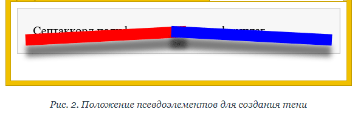
В примере показано добавление тени с помощью ::before и ::after.
Создание тени
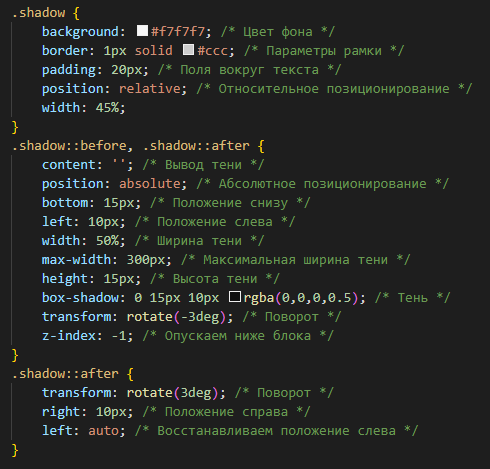 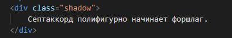
Для создания разных теней можно воспользоваться визуальным генератором Box-shadow_generator
Повёрнутые рамки
Рамки можно делать с помощью свойств border, outline, даже с помощью box-shadow и градиентов. Все эти свойства позволяют получить самые разнообразные декоративные рамки. Однако если рамка должна быть повёрнута, то без псевдоэлементов не обойтись, поскольку нам надо трансформировать только рамку, не затрагивая содержимого элемента.
Для этого мы создадим псевдоэлемент таких же размеров, что и сам элемент, и с такой же рамкой, а затем просто повернём его с помощью свойства transform.
Создание рамки
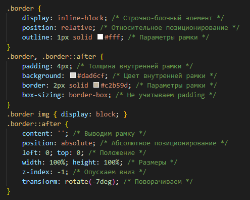 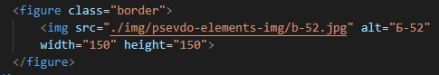
Несколько псевдоэлементов
Следует помнить, что к каждому элементу можно добавить только один ::before и только один ::after.
В большинстве ситуаций двух псевдоэлементов вполне достаточно, хотя в сложных случаях их потребуется больше.
При этом можно воспользоваться таким трюком — внутрь нашего элемента вставить пустой <div> и к нему уже добавить ещё псевдоэлементы.
Модифицируем повёрнутую рамку, добавив к ней ещё и уголки.
Два уголка плюс рамка — итого получается три псевдоэлемента. ::after и ::before «навесим» на элемент <figure>, а ещё один добавим к <div> с классом border внутри <figure>, как показано в примере
Уголки сделаем с помощью квадратов, фон которых совпадает с фоном веб-страницы. Один уголок располагается в правом верхнем углу, а другой — в левом нижнем. Затем уголки поворачиваются на 45 градусов, а лишние части удаляются через свойство overflow со значением hidden.
Несколько псевдоэлементов
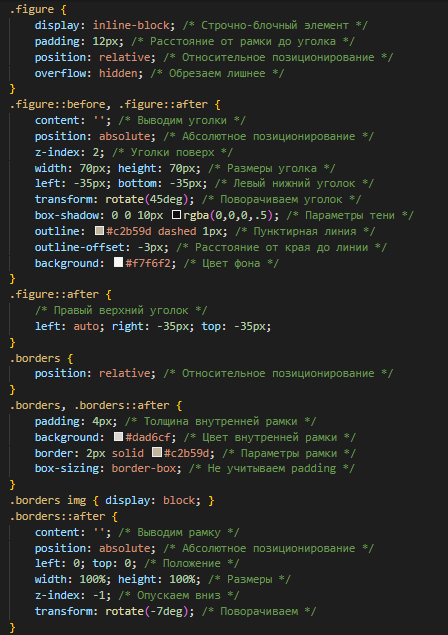 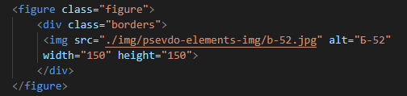